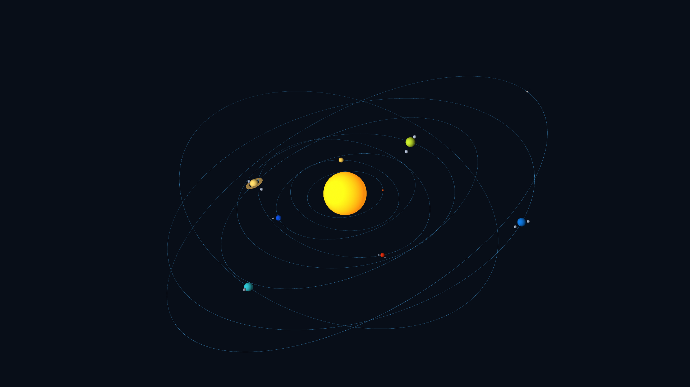
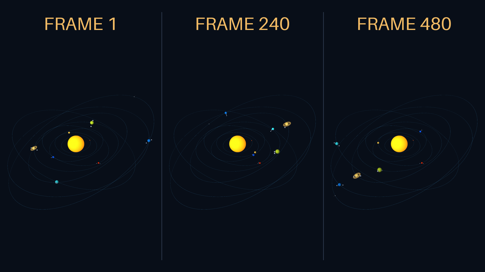
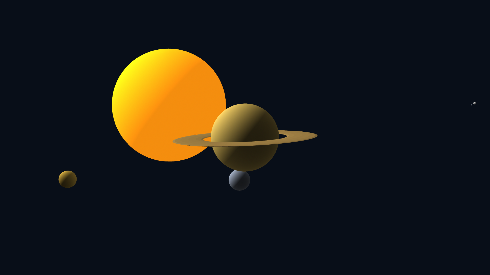

01
Orbits in three dimensions
Each orbit sits on a different plane, with tilts ranging from −16° to 28°. Thin orbit paths show how the planes intersect. The angles are exaggerated so the change is easy to see.
Milo Nguyen · September 9, 2026
A solar system study in hierarchy, orbital motion, and camera movement.
10 seconds · 24 fps · 1920 × 1080
Polygon spheres, simple materials, and nested groups: planets rotate around the Sun while moons orbit their planets. Open video ↗
20 seconds · 24 fps · 1920 × 1080
Tilted orbital planes, independent timing, and a moving camera. Open video ↗
THREE CHANGES

01
Each orbit sits on a different plane, with tilts ranging from −16° to 28°. Thin orbit paths show how the planes intersect. The angles are exaggerated so the change is easy to see.

02
The planets begin at different points in their orbits. Mercury completes four turns while Pluto completes half a turn over the same 20 seconds. The changing spacing replaces the original aligned formation.

03
The camera moves from the whole system into a close view of Saturn, tracks its motion while the moons orbit, then pulls back. Orbit guides disappear during the close-up to keep the ring and moons clear.